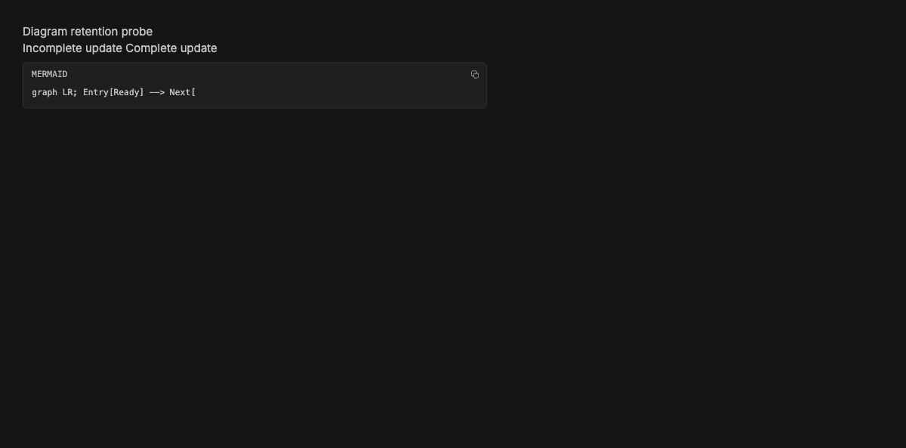
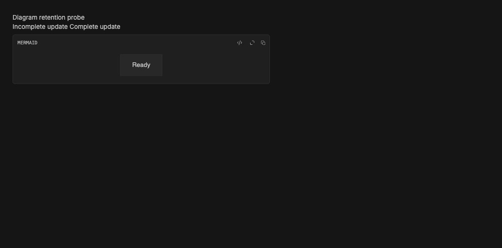

#3777 · Preserve a diagram during failed replacement
REPRODUCED · Root-cause confidence: high
1. TL;DR
A completed diagram disappears when a later streamed source fragment cannot be parsed. A real MarkdownPreview fixture with real Mermaid shows the SVG count falling from one to zero. The component reuses a render ID, letting Mermaid remove the displayed SVG, and its failure handler also discards the successful render state. Both paths must be fixed to retain a preview while replacement is pending or rejected.
2. Claims vs findings
| Claim | Finding | Evidence |
|---|---|---|
| Incomplete source removes an existing diagram | Verified | Browser click and screenshots; real Mermaid |
| Render ID reuse permits removal of displayed SVG | Verified | Installed Mermaid removal path and regression modeling that exact operation |
| Rejected render discards previous state | Verified | Separate rejection regression fails on main in two checkouts |
| Provider-specific behavior | Not required | Source UI reproduction without provider or database |
3. Environment
Trusted origin/main commit 6084f894305e389604ce19b1cace442b0fc25bad. macOS arm64; Node 22.22.3; repository-pinned pnpm 9.15.0 via Corepack; Mermaid 11.15.0. Local headless Chrome through BB Browser Automation, isolated Ladle at port 54327. No core server, production data, provider, or database used. Frozen installation succeeded. Full Turbo build: 57 successful tasks. The default pnpm launcher was broken; a temporary Corepack shim supplied the pinned pnpm.
4. Minimal reproduction
- Check out the trusted commit above and install with
corepack pnpm install --frozen-lockfile --prefer-offline. - Copy the attached regression file over
apps/app/src/components/ui/markdown-mermaid-diagram.render.test.tsx. - Run
pnpm exec turbo run test --filter=@bb/app -- --run src/components/ui/markdown-mermaid-diagram.render.test.tsx.
Expected: all seven tests pass and a prior SVG remains available during replacement and rejection. Actual on unchanged production code:
Tests 2 failed | 5 passed (7) The pending replacement and rejected replacement assertions fail: no displayed SVG remains.
Second-run verbatim test log (local evidence; relevant content included below) · Regression file (local evidence; relevant content included below)
For the visual reproduction, apply the investigator-authored story patch (local evidence; relevant content included below) to the trusted checkout. Run pnpm exec turbo run storybook --filter=@bb/app -- --host 127.0.0.1 --port 54327. Open http://127.0.0.1:54327/?story=ui--markdown-mermaid-diagram--retention-probe&mode=preview, wait for Ready, click Incomplete update, and wait beyond the 300 ms debounce. Expected: Ready remains. Actual: only source is visible.


Complete regression source
// @vitest-environment jsdom
import { act, cleanup, render } from "@testing-library/react";
import { afterEach, beforeEach, describe, expect, it, vi } from "vitest";
import { MarkdownMermaidDiagram } from "./markdown-mermaid-diagram";
import {
buildMermaidRenderCacheKey,
clearMermaidRenderCache,
getMermaidRenderCacheSize,
MERMAID_RENDER_CACHE_LIMIT,
MERMAID_SOURCE_RENDER_DEBOUNCE_MS,
readMermaidRenderCache,
storeMermaidRenderCache,
} from "./markdown-mermaid-render-cache";
const mermaidRender = vi.hoisted(() =>
vi.fn(async (_id: string, source: string) => ({
svg: `<svg data-source="${source}"></svg>`,
bindFunctions: undefined,
})),
);
vi.mock("./markdown-mermaid-loader.js", () => ({
loadMermaid: async () => ({
initialize: () => undefined,
render: mermaidRender,
}),
}));
type ObserverCallback = (
entries: { isIntersecting: boolean; target: Element }[],
) => void;
const observers: {
callback: ObserverCallback;
targets: Set<Element>;
disconnected: boolean;
}[] = [];
class FakeIntersectionObserver {
private readonly record: (typeof observers)[number];
constructor(callback: ObserverCallback) {
this.record = { callback, targets: new Set(), disconnected: false };
observers.push(this.record);
}
observe(target: Element) {
this.record.targets.add(target);
}
unobserve(target: Element) {
this.record.targets.delete(target);
}
disconnect() {
this.record.disconnected = true;
this.record.targets.clear();
}
takeRecords() {
return [];
}
}
function enterViewport(target: Element) {
for (const observer of observers) {
if (observer.targets.has(target)) {
observer.callback([{ isIntersecting: true, target }]);
}
}
}
function diagramContainer(container: HTMLElement): Element {
const element = container.firstElementChild;
if (element === null) {
throw new Error("diagram container did not render");
}
return element;
}
async function flushRenders() {
await act(async () => {
await Promise.resolve();
await Promise.resolve();
});
}
beforeEach(() => {
vi.useFakeTimers();
vi.stubGlobal("IntersectionObserver", FakeIntersectionObserver);
observers.length = 0;
mermaidRender.mockClear();
clearMermaidRenderCache();
});
afterEach(() => {
cleanup();
vi.unstubAllGlobals();
vi.useRealTimers();
});
describe("MarkdownMermaidDiagram render gating", () => {
it("does not render until the diagram nears the viewport and shares one observer across diagrams", async () => {
const first = render(
<MarkdownMermaidDiagram
preferredTheme="light"
source="graph TD; A-->B"
/>,
);
const second = render(
<MarkdownMermaidDiagram
preferredTheme="light"
source="graph TD; C-->D"
/>,
);
await flushRenders();
expect(mermaidRender).not.toHaveBeenCalled();
expect(observers.filter((observer) => !observer.disconnected)).toHaveLength(
1,
);
act(() => {
enterViewport(diagramContainer(first.container));
});
await flushRenders();
expect(mermaidRender).toHaveBeenCalledTimes(1);
expect(mermaidRender.mock.calls[0]?.[1]).toBe("graph TD; A-->B");
expect(
first.container.querySelector('svg[data-source="graph TD; A-->B"]'),
).not.toBeNull();
expect(second.container.querySelector("svg[data-source]")).toBeNull();
});
it("debounces streaming source updates and keeps the previous diagram on screen meanwhile", async () => {
const view = render(
<MarkdownMermaidDiagram preferredTheme="light" source="graph TD; A" />,
);
act(() => {
enterViewport(diagramContainer(view.container));
});
await flushRenders();
expect(mermaidRender).toHaveBeenCalledTimes(1);
view.rerender(
<MarkdownMermaidDiagram preferredTheme="light" source="graph TD; A-->" />,
);
await flushRenders();
await act(async () => {
vi.advanceTimersByTime(MERMAID_SOURCE_RENDER_DEBOUNCE_MS - 50);
});
view.rerender(
<MarkdownMermaidDiagram
preferredTheme="light"
source="graph TD; A-->B"
/>,
);
await flushRenders();
await act(async () => {
vi.advanceTimersByTime(MERMAID_SOURCE_RENDER_DEBOUNCE_MS - 50);
});
expect(mermaidRender).toHaveBeenCalledTimes(1);
expect(
view.container.querySelector('svg[data-source="graph TD; A"]'),
).not.toBeNull();
await act(async () => {
vi.advanceTimersByTime(50);
});
await flushRenders();
expect(mermaidRender).toHaveBeenCalledTimes(2);
expect(mermaidRender.mock.calls[1]?.[1]).toBe("graph TD; A-->B");
expect(
view.container.querySelector('svg[data-source="graph TD; A-->B"]'),
).not.toBeNull();
});
it("keeps the mounted SVG while Mermaid prepares a replacement", async () => {
mermaidRender.mockImplementationOnce(async (id) => ({
svg: `<svg id="${id}" data-version="old"></svg>`,
bindFunctions: undefined,
}));
const view = render(
<MarkdownMermaidDiagram
preferredTheme="light"
source="graph TD; First"
/>,
);
act(() => enterViewport(diagramContainer(view.container)));
await flushRenders();
const previousSvg = view.container.querySelector('svg[data-version="old"]');
expect(previousSvg).not.toBeNull();
let finish:
| ((value: { svg: string; bindFunctions: undefined }) => void)
| undefined;
mermaidRender.mockImplementationOnce((id) => {
document.getElementById(id)?.remove();
return new Promise((resolve) => {
finish = resolve;
});
});
view.rerender(
<MarkdownMermaidDiagram
preferredTheme="light"
source="graph TD; First-->Second"
/>,
);
await act(async () =>
vi.advanceTimersByTime(MERMAID_SOURCE_RENDER_DEBOUNCE_MS),
);
await flushRenders();
expect(
view.container.querySelector('svg[data-version="old"]')?.outerHTML,
).toBe(previousSvg?.outerHTML);
await act(async () =>
finish?.({
svg: '<svg data-version="new"></svg>',
bindFunctions: undefined,
}),
);
expect(
view.container.querySelector('svg[data-version="new"]'),
).not.toBeNull();
});
it("retains a successful preview after rejection and accepts the next result", async () => {
const view = render(
<MarkdownMermaidDiagram
preferredTheme="light"
source="graph TD; Initial"
/>,
);
act(() => enterViewport(diagramContainer(view.container)));
await flushRenders();
const previousSvg = view.container.querySelector("svg[data-source]");
expect(previousSvg).not.toBeNull();
mermaidRender.mockRejectedValueOnce(new Error("incomplete graph"));
view.rerender(
<MarkdownMermaidDiagram
preferredTheme="light"
source="graph TD; Initial-->"
/>,
);
await act(async () =>
vi.advanceTimersByTime(MERMAID_SOURCE_RENDER_DEBOUNCE_MS),
);
await flushRenders();
expect(view.container.querySelector("svg[data-source]")?.outerHTML).toBe(
previousSvg?.outerHTML,
);
view.rerender(
<MarkdownMermaidDiagram
preferredTheme="light"
source="graph TD; Initial-->Final"
/>,
);
await act(async () =>
vi.advanceTimersByTime(MERMAID_SOURCE_RENDER_DEBOUNCE_MS),
);
await flushRenders();
expect(
view.container.querySelector(
'svg[data-source="graph TD; Initial-->Final"]',
),
).not.toBeNull();
});
it("shows source when the first render rejects", async () => {
mermaidRender.mockRejectedValueOnce(new Error("invalid graph"));
const view = render(
<MarkdownMermaidDiagram preferredTheme="light" source="not a diagram" />,
);
act(() => enterViewport(diagramContainer(view.container)));
await flushRenders();
expect(view.container.querySelector("svg[data-source]")).toBeNull();
expect(view.container.textContent).toContain("not a diagram");
});
it("serves a remounted diagram from the render cache without calling mermaid again", async () => {
const view = render(
<MarkdownMermaidDiagram preferredTheme="dark" source="graph TD; X-->Y" />,
);
act(() => {
enterViewport(diagramContainer(view.container));
});
await flushRenders();
expect(mermaidRender).toHaveBeenCalledTimes(1);
view.unmount();
const remounted = render(
<MarkdownMermaidDiagram preferredTheme="dark" source="graph TD; X-->Y" />,
);
expect(
remounted.container.querySelector('svg[data-source="graph TD; X-->Y"]'),
).not.toBeNull();
await flushRenders();
expect(mermaidRender).toHaveBeenCalledTimes(1);
remounted.rerender(
<MarkdownMermaidDiagram
preferredTheme="light"
source="graph TD; X-->Y"
/>,
);
await flushRenders();
expect(mermaidRender).toHaveBeenCalledTimes(2);
});
});
describe("mermaid render cache", () => {
it("evicts the least recently used entry past the limit", () => {
const diagram = { svg: "<svg></svg>", bindFunctions: undefined };
const keyFor = (index: number) =>
buildMermaidRenderCacheKey({
appThemeEpoch: 0,
preferredTheme: "light",
source: `graph ${index}`,
});
for (let index = 0; index < MERMAID_RENDER_CACHE_LIMIT; index += 1) {
storeMermaidRenderCache(keyFor(index), diagram);
}
expect(readMermaidRenderCache(keyFor(0))).toBe(diagram);
storeMermaidRenderCache(keyFor(MERMAID_RENDER_CACHE_LIMIT), diagram);
expect(getMermaidRenderCacheSize()).toBe(MERMAID_RENDER_CACHE_LIMIT);
expect(readMermaidRenderCache(keyFor(0))).toBe(diagram);
expect(readMermaidRenderCache(keyFor(1))).toBeNull();
});
});
5. Root cause
The component-memoized ID is supplied to every Mermaid render. The installed Mermaid no-container path calls doc.getElementById(id)?.remove() before parsing. This targets the visible SVG when its ID is reused. Independently, the catch handler unconditionally replaces render state with source. Debouncing only postpones these operations; it cannot prevent either failure once the debounce expires.
return mermaid.render(renderId, source);
...
setRenderState({ kind: "source" });
6. Proposed fix and validation
Suffix the component ID with an incrementing attempt counter immediately before each actual render. On rejection, retain rendered state if present; otherwise preserve the first-render source fallback. This affects only the existing Mermaid component. The regression also checks that the next successful replacement is accepted. All 20 Mermaid tests pass after the change; app typecheck passes.

7. Verification
The same agent repeated the reproduction in a separate clean temporary worktree at the exact base commit, installed frozen dependencies independently, and copied only the investigator-authored regression file. The command in section 4 again reports two failing and five passing tests. No browser or server was required in that second checkout. This is a repeated check, not independent review.
Test correction: the first version asserted DOM object identity, which React may change on rerender. Final assertions compare the displayed SVG content. The corrected tests still fail against unchanged main and pass after the fix. The finding did not change. The later main commit 4dfade6054af4caa34e2b24224c7f78ca1baead8 changes timeline growth and does not change these Mermaid source or test files.
8. Related issues and PRs
No linked open PR was found in issue timeline metadata or open-PR search at investigation time. Nearby Mermaid/layout and Docs feature issues do not establish a fix for this component failure.
9. Appendix and trust boundary
Issue material was treated as untrusted claims. No issue script, patch, linked branch, or external issue URL was executed or fetched. Reproduction code was authored from trusted repository evidence. Browser coverage is local Chromium only; other browsers and full provider turns were not tested. The broader verification inventory reports an existing unmapped browser CLI family, outside this change.
- First failing run (local evidence; relevant content included below)
- Second corrected failing run (local evidence; relevant content included below)
- 20 passing Mermaid tests (local evidence; relevant content included below)
- App typecheck (local evidence; relevant content included below)
- Full build (local evidence; relevant content included below)
- Browser observations (local evidence; relevant content included below)
Inline browser fixture
import { useState } from "react";
import { MarkdownPreview } from "./markdown-preview.js";
import { MarkdownMermaidDiagram } from "./markdown-mermaid-diagram.js";
import { StoryCard, StoryRow } from "../../../.ladle/story-card";
export default {
title: "ui/Markdown mermaid diagram",
};
const FLOWCHART = `flowchart TD
A[Start] --> B{Has changes?}
B -->|Yes| C[Commit]
B -->|No| D[Skip]
C --> E[Push]
D --> E`;
const SEQUENCE = `sequenceDiagram
participant U as User
participant S as Server
U->>S: Request
S-->>U: Response`;
export function Overview() {
return (
<StoryCard>
<StoryRow
label="flowchart"
hint="inline diagram; the Maximize control opens the shadow-sm viewer dialog"
>
<div className="w-full max-w-[640px]">
<MarkdownMermaidDiagram preferredTheme="light" source={FLOWCHART} />
</div>
</StoryRow>
<StoryRow label="sequence" hint="a second diagram kind">
<div className="w-full max-w-[640px]">
<MarkdownMermaidDiagram preferredTheme="light" source={SEQUENCE} />
</div>
</StoryRow>
</StoryCard>
);
}
export function RetentionProbe() {
const [suffix, setSuffix] = useState("");
return <div style={{ padding: 32, maxWidth: 720 }}>
<h1>Diagram retention probe</h1>
<button onClick={() => setSuffix(" --> Next[")}>Incomplete update</button>{" "}
<button onClick={() => setSuffix(" --> Next[Complete]")}>Complete update</button>
<MarkdownPreview content={"```mermaid\ngraph LR; Entry[Ready]" + suffix} />
</div>;
}
Corrected second-run output
• turbo 2.10.12
• Packages in scope: @bb/app
• Running test in 1 packages
• Remote caching disabled, using shared worktree cache
//:ensure-native-modules: cache bypass, force executing 40633f0568ea5c25
@bb/templates:generate:plugin-scaffold: cache hit, replaying logs a021c2439e23e2d6
@bb/templates:generate:templates: cache hit, replaying logs 1123bba098abf9cf
@bb/plugin-build:generate: cache hit, replaying logs 43ebf5a988685d84
@bb/templates:generate:plugin-scaffold:
@bb/templates:generate:plugin-scaffold: > @bb/templates@0.0.1 generate:plugin-scaffold <checkout>/packages/templates
@bb/templates:generate:plugin-scaffold: > node ./scripts/generate-plugin-scaffold.mjs
@bb/templates:generate:plugin-scaffold:
@bb/plugin-build:generate:
@bb/plugin-build:generate: > @bb/plugin-build@0.0.1 generate <checkout>/packages/plugin-build
@bb/plugin-build:generate: > node ./scripts/generate-plugin-theme.mjs && node ./scripts/generate-runtime-export-manifest.mjs
@bb/templates:generate:templates:
@bb/templates:generate:templates: > @bb/templates@0.0.1 generate:templates <checkout>/packages/templates
@bb/templates:generate:templates: > node ./scripts/generate-templates.mjs
@bb/templates:generate:templates:
@bb/plugin-build:generate:
@bb/plugin-build:generate: plugin-theme.generated.ts up to date
@bb/plugin-build:generate: wrote <checkout>/packages/plugin-build/src/generated/runtime-export-manifest.generated.ts (react@19.2.4)
//:ensure-native-modules:
//:ensure-native-modules: > bb@ ensure-native-modules <second-checkout>
//:ensure-native-modules: > node scripts/ensure-native-modules.mjs
//:ensure-native-modules:
@bb/app:test: cache miss, executing 75917234867a7eb4
@bb/app:test:
@bb/app:test: > @bb/app@0.0.1 test <second-checkout>/apps/app
@bb/app:test: > node scripts/generate-pwa-icons.mjs --check && vitest run --config vitest.config.ts "--run" "src/components/ui/markdown-mermaid-diagram.render.test.tsx"
@bb/app:test:
@bb/app:test:
@bb/app:test: RUN v4.1.1 <second-checkout>/apps/app
@bb/app:test:
@bb/app:test: Not implemented: HTMLCanvasElement's getContext() method: without installing the canvas npm package
@bb/app:test: ❯ |@bb/app:isolated| src/components/ui/markdown-mermaid-diagram.render.test.tsx (7 tests | 2 failed) 158ms
@bb/app:test: ✓ does not render until the diagram nears the viewport and shares one observer across diagrams 70ms
@bb/app:test: ✓ debounces streaming source updates and keeps the previous diagram on screen meanwhile 27ms
@bb/app:test: × keeps the mounted SVG while Mermaid prepares a replacement 21ms
@bb/app:test: × retains a successful preview after rejection and accepts the next result 16ms
@bb/app:test: ✓ shows source when the first render rejects 6ms
@bb/app:test: ✓ serves a remounted diagram from the render cache without calling mermaid again 17ms
@bb/app:test: ✓ evicts the least recently used entry past the limit 0ms
@bb/app:test:
@bb/app:test: ⎯⎯⎯⎯⎯⎯⎯ Failed Tests 2 ⎯⎯⎯⎯⎯⎯⎯
@bb/app:test:
@bb/app:test: FAIL |@bb/app:isolated| src/components/ui/markdown-mermaid-diagram.render.test.tsx > MarkdownMermaidDiagram render gating > keeps the mounted SVG while Mermaid prepares a replacement
@bb/app:test: AssertionError: expected undefined to be '<svg id="bb-mermaid-_r_d_" data-versi…' // Object.is equality
@bb/app:test:
@bb/app:test: - Expected:
@bb/app:test: "<svg id=\"bb-mermaid-_r_d_\" data-version=\"old\"></svg>"
@bb/app:test:
@bb/app:test: + Received:
@bb/app:test: undefined
@bb/app:test:
@bb/app:test: ❯ src/components/ui/markdown-mermaid-diagram.render.test.tsx:204:80
@bb/app:test: 202| );
@bb/app:test: 203| await flushRenders();
@bb/app:test: 204| expect(view.container.querySelector('svg[data-version="old"]')?.ou…
@bb/app:test: | ^
@bb/app:test: 205| previousSvg?.outerHTML,
@bb/app:test: 206| );
@bb/app:test:
@bb/app:test: ⎯⎯⎯⎯⎯⎯⎯⎯⎯⎯⎯⎯⎯⎯⎯⎯⎯⎯⎯⎯⎯⎯⎯⎯[1/2]⎯
@bb/app:test:
@bb/app:test: FAIL |@bb/app:isolated| src/components/ui/markdown-mermaid-diagram.render.test.tsx > MarkdownMermaidDiagram render gating > retains a successful preview after rejection and accepts the next result
@bb/app:test: AssertionError: expected undefined to be '<svg data-source="graph TD; Initial">…' // Object.is equality
@bb/app:test:
@bb/app:test: - Expected:
@bb/app:test: "<svg data-source=\"graph TD; Initial\"></svg>"
@bb/app:test:
@bb/app:test: + Received:
@bb/app:test: undefined
@bb/app:test:
@bb/app:test: ❯ src/components/ui/markdown-mermaid-diagram.render.test.tsx:240:73
@bb/app:test: 238| );
@bb/app:test: 239| await flushRenders();
@bb/app:test: 240| expect(view.container.querySelector("svg[data-source]")?.outerHTML…
@bb/app:test: | ^
@bb/app:test: 241| view.rerender(
@bb/app:test: 242| <MarkdownMermaidDiagram
@bb/app:test:
@bb/app:test: ⎯⎯⎯⎯⎯⎯⎯⎯⎯⎯⎯⎯⎯⎯⎯⎯⎯⎯⎯⎯⎯⎯⎯⎯[2/2]⎯
@bb/app:test:
@bb/app:test:
@bb/app:test: Test Files 1 failed (1)
@bb/app:test: Tests 2 failed | 5 passed (7)
@bb/app:test: Start at 08:46:24
@bb/app:test: Duration 2.03s (transform 708ms, setup 79ms, import 1.14s, tests 158ms, environment 540ms)
@bb/app:test:
@bb/app:test: ELIFECYCLE Test failed. See above for more details.
@bb/app#test: ERROR command (<second-checkout>/apps/app) <work>/bin/pnpm run test --run src/components/ui/markdown-mermaid-diagram.render.test.tsx exited (1)
Tasks: 4 successful, 5 total
Cached: 3 cached, 5 total
Time: 3.512s
Failed: @bb/app#test
ERROR run failed: command exited (1)